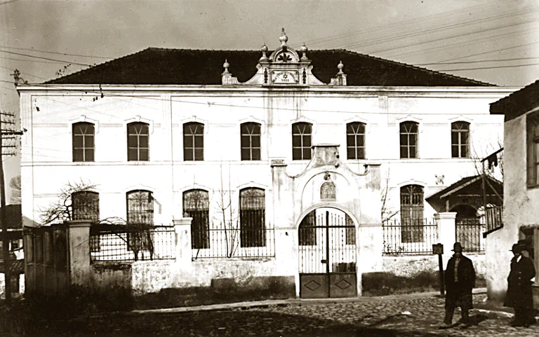
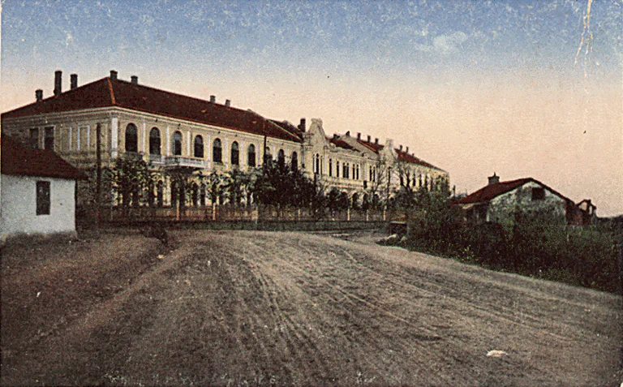
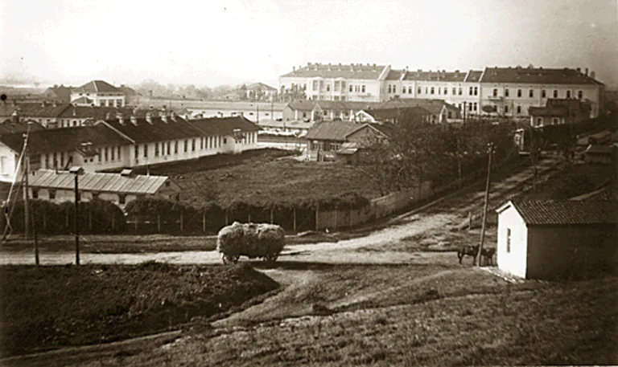
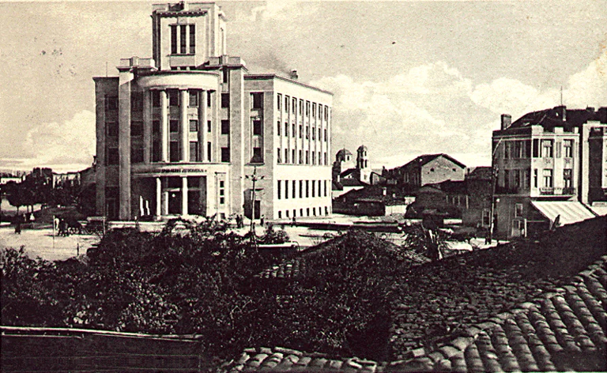
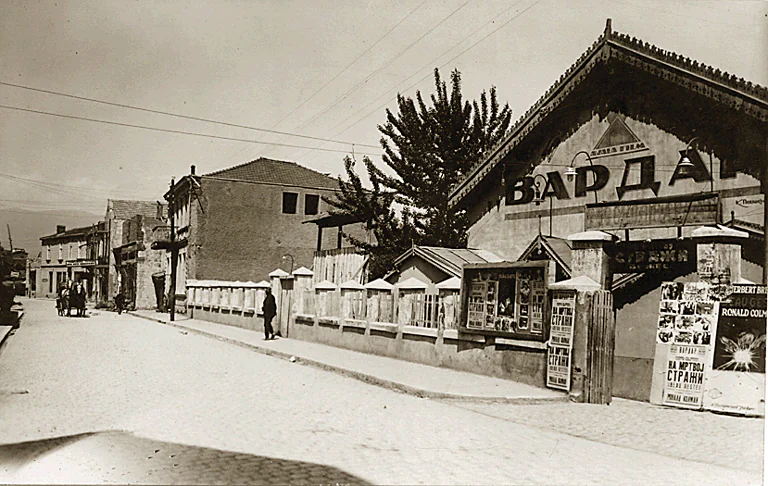

Skopje 1916 - 1917 panorama 1
Documents des guerres balkaniques
- Année
- 1916-1917
- Durée
- 00:11

Hôtel Turati. Construit à la fin du XIXe siècle.

La photo a été prise depuis le bâtiment de l'ancienne gare - l'actuel musée de la ville de Skopje -, construit en 1873 sous l'Empire ottoman. Au premier plan, l'accès à la gare avec des espaces verts clôturés. Puis la rue principale qui mène à la place. Au début de la rue, à gauche, l'hôtel « Russie ».

Vue vers la rue principale « Makedonija ». L'arc a été dressé en l'honneur d'un hôte important. À sa gauche, l'hôtel « Russie ». - début du XXe siècle.

Le palais de justice, années 1920.

Le palais de justice, années 1920.

L'immeuble de la communauté juive - années 1920.

La maison des sœurs serbes - années 1920.

Skopje après 1930. Vue de la rue principale, de l'actuel musée de la ville de Skopje vers la place. Les deux bâtiments les plus hauts sont le Grand Hôtel « Bristol » et, à sa droite, l'hôtel « Roi de Serbie ». Une architecture aux éléments éclectiques.

Les hôtels Roi de Serbie et Bristol. - années 1920.

La maison des frères Čitkušev. - années 1920

La maison du pharmacien Ristić, appelée palais Ristić. À gauche sur la photo, une partie de l'hôtel « Aigle blanc ». (années 1920)

Palais Ristić - vers 1925.

Le palais Ristić. À gauche sur la photo, une partie de l'hôtel « Aigle blanc ». (vers 1925)

Hôtel « Pariz ». On voit la cour de l'hôtel, qui abritait une brasserie et une pâtisserie. - années 1920

Hôtel « Moskva » - années 1930

La Banque ottomane - vers 1910.

La petite place, juste à côté du pont de pierre, sur la rive gauche du Vardar. Au premier plan, le monument aux morts des guerres balkaniques ; au fond à droite, la Banque ottomane.
- années 1920

Le nouvel hôtel « Sarajevo » en construction - sur la place. À sa gauche, le café du théâtre et, au-dessus, l'ancien hôtel « Sarajevo ». - années 1920

La place avec l'hôtel « Sarajevo » et le populaire café « Marger », lieu préféré des habitants de Skopje. À gauche de l'hôtel « Sarajevo » se trouvait l'hôtel « Obedinuvanje ». Au premier plan, sur le trottoir, un vendeur de bretzels. (vers 1935)

La caserne de la forteresse de Skopje - Kale. - années 1920

La prison de Skopje. Elle se trouvait tout près de la mosquée Mustafa Pacha. - fin du XIXe siècle

Le Hükümet (la mairie). À côté, la poste turque, et derrière elle la mosquée Mustafa Pacha. - années 1920

Le Hükümet (la mairie). À côté, la poste turque. À l'arrière-plan, la mosquée Mustafa Pacha. - années 1920

Le Hükümet (la mairie). À côté, la poste turque, et derrière elle la mosquée Mustafa Pacha. - années 1920

Le bâtiment de l'inspection des finances. Il abrite aujourd'hui l'Institut des métaux précieux. À l'époque ottomane, c'était le « Hükümet » (mairie). - années 1930

Le gymnase ou maison des Sokols de Skopje « Sokolana », construit en 1936.

La maison des Sokols de Skopje, construite en 1936.

L'hôpital militaire « Croissant-Rouge » - fin du XIXe siècle. Le bâtiment se distingue par un style académique aux formes Renaissance et baroques.

L'hôpital militaire « Croissant-Rouge », construit à la fin du XIXe siècle. Le bâtiment se distingue par un style académique aux formes Renaissance et baroques. (années 1920)

L'hôpital militaire « Croissant-Rouge », construit à la fin du XIXe siècle.

L'hôpital militaire « Croissant-Rouge », construit à la fin du XIXe siècle.

Vue de la rue principale, de l'actuel musée de la ville de Skopje vers la place. Le palais Krang, aux éléments classiques et baroques, abritait le cinéma « Kapitol ». À l'arrière-plan, le Cercle des officiers. - années 1930

Le sanatorium « Vardar » - années 1930

La maison du dentiste Dr Ruben, qui avait son cabinet juste à côté du pont de pierre, sur la rive gauche du Vardar. - années 1930

L'hôtel des postes. - années 1930

La Banque nationale, construite d'après les plans de l'architecte B. Nestorović. Un académisme simplifié dans les éléments décoratifs et des influences modernistes. - années 1930.

La Banque nationale la nuit. Devant elle, une partie de la promenade des habitants de Skopje, appelée « le Corso ». - années 1930.

La Banque nationale, construite d'après les plans de l'architecte B. Nestorović. Un académisme simplifié dans les éléments décoratifs et des influences modernistes. À droite, la Chambre de commerce (architecte M. Zloković) - années 1930.

Le pont de pierre avec la Banque nationale à l'arrière-plan. - années 1930

La Banque nationale, le Cercle des officiers et une partie du pont de pierre. - années 1930

La Banque nationale avec le Cercle des officiers et le pont de pierre. Photo prise depuis la rive gauche du Vardar, sur la petite place où stationnaient les calèches. (années 1930)

L'ancien lycée de filles. - années 1930

La centrale thermique de Skopje - 1910

L'intérieur de la centrale thermique de Skopje - 1910

L'usine pharmaceutique. - années 1920.

La première station-service « Shell » de Skopje. - 1927

Exercice des pompiers de Skopje. - années 1930.

Un atelier de tailleur typique dans l'ancien bazar - 1920

Station de charretiers avec voitures attelées. - années 1920

La tannerie de Skopje. - années 1920.

La carrière de Skopje, à Kisela Voda, sur les pentes du Vodno. - années 1920.

L'aérodrome près de Skopje - 1933. Il se trouvait à l'emplacement actuel des quartiers Aerodrom et Jane Sandanski.

L'hippodrome de Skopje. (fin des années 1920)

La salle de cinéma « Vardar » - années 1940. Entre les deux guerres, Skopje comptait les cinémas suivants : Zrinjski, Apolo (brûlé en 1930, remplacé par le cinéma Korzo), Balkan, Vardar, Kapitol, Uranija, Avala.

Le monument aux élèves morts pendant la Première Guerre mondiale - années 1920.

Pharmacie municipale. - 1932.

La caisse d'assurance des ouvriers (l'actuel hôpital municipal). - années 1930

L'Assemblée de la R. de Macédoine, années 1940. À l'époque, c'était la Direction régionale.

L'actuelle Assemblée de la R. de Macédoine - les années avant le séisme.

Stara - Nova Banja. Une partie de Skopje à l'emplacement de l'actuelle université « Saints-Cyrille-et-Méthode »

Le bâtiment de l'Administration de l'intérieur, construit dans les années 1950. Plus tard, il accueille les facultés de droit, d'économie et de philosophie ainsi que le rectorat.

Le palais de justice, juste après le séisme. À sa gauche, l'ancienne mosquée « Elen Kapan ».

Le bâtiment de la compagnie d'électricité (1962-1964), tout près de la place de la ville.

Le centre commercial municipal. Les travaux commencent officiellement le 11 octobre 1969 ; le 27 avril 1973, la partie centrale est inaugurée, et depuis le complexe fonctionne normalement.

Le centre commercial municipal (1969 - 1973) avec une partie du parc « La Combattante ».

Le centre commercial municipal (1969 - 1973) avec l'espace vert aménagé du parc « La Combattante ».

Documents des guerres balkaniques
Revue filmée n° 21
 Aqueduc4 cartes postales
Aqueduc4 cartes postales Kale30 cartes postales
Kale30 cartes postales Ponts60 cartes postales
Ponts60 cartes postales Quai58 cartes postales
Quai58 cartes postales Place46 cartes postales
Place46 cartes postales Édifices66 cartes postales
Édifices66 cartes postales Églises chrétiennes19 cartes postales
Églises chrétiennes19 cartes postales Édifices musulmans33 cartes postales
Édifices musulmans33 cartes postales Cercle des officiers29 cartes postales
Cercle des officiers29 cartes postales Théâtre28 cartes postales
Théâtre28 cartes postales Gare ferroviaire13 cartes postales
Gare ferroviaire13 cartes postales Écoles36 cartes postales
Écoles36 cartes postales Parcs12 cartes postales
Parcs12 cartes postales Marchés18 cartes postales
Marchés18 cartes postales Rues38 cartes postales
Rues38 cartes postales Panorama I60 cartes postales
Panorama I60 cartes postales Panorama II30 cartes postales
Panorama II30 cartes postales Collages55 cartes postales
Collages55 cartes postales Inondations9 cartes postales
Inondations9 cartes postales Séisme27 cartes postales
Séisme27 cartes postales Skopje 200026 cartes postales
Skopje 200026 cartes postales